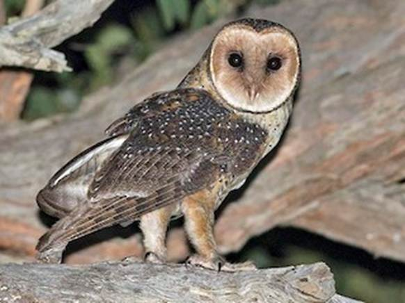
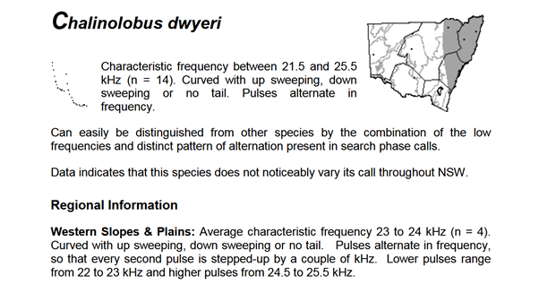
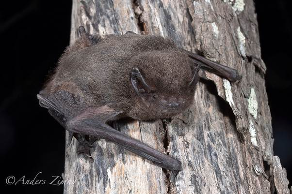
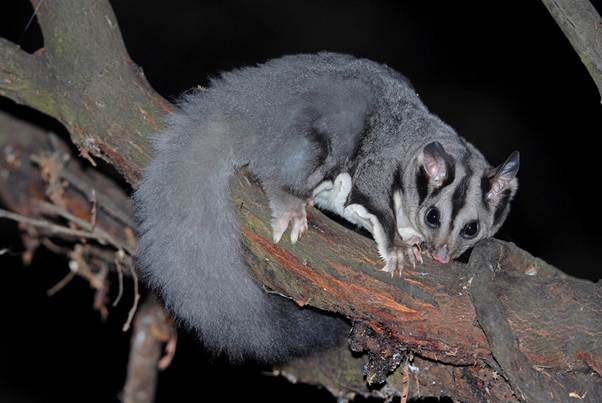
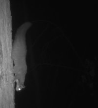
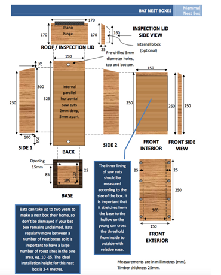

Cassinia Internship Project: Learning how to identify and monitor our threatened species
Moolagundi and Little Moolagundi properties, Warrumbungle Shire, NSW
by Jude van Houtte, managed by Greg Harris
IUCN red list for threatened species indicated that Barking Owls were of Least Concern (2016) despite declining population trends1. NSW established a scientific committee for the Threatened Species Conservation Act and deemed the barking owl to be at a vulnerable status2. In 2008 it was found that their populations were still declining in South-Western Red Gum forests of NSW3.
Two subspecies can be found in Australia: Ninox connivens penninsularis and Ninox connivens connivens. The former is found in coastal northern Australia and Cape York, while the latter is found in Southwest, east and southeast Australia (the likelier candidate near Moolagundi). N. c. connivens are approximately 40cm long from bill tip to tail, with males weighing around 700g and females 600g5. Both sexes are mostly brown, with white spots on the wings, and white striations on the chest, which is more prominent in the adults. They have large yellow eyes, a spherical face and fully feathered legs with powerful yellow claws. They could be confused with the powerful owl (Ninox strenua) or southern boobook (Ninox novaeseelandiae), but the powerful owl is larger, with striations rather than spots on the wing, and the boobook is smaller (27-36cm), has hazel eyes and small grey feet5.
Powerful owl is larger (45-65cm in length), barring rather than spots on wing, call is a whoo-hoo and is more often seen during the day10
Mulurrku (Yanyuwa), Muurrguu (Yuwaalayaay)
Native to Australia, parts of New Guinea and Moluccas (Indonesia).
Home ranges can be from 800ha to 8000ha3, averaging around 2,000ha15. Roosts in shade of dense foliage (Acacia, Casuarina3, Eucalyptus, and Angophora5 species). Can hunt small mammals such as sugar gliders and ringtail possums, but will become reliant on birds, invertebrates and pest species like rodents and rabbits when tree hollows are sparse (for prey habitat)4. They prefer a mosaic of farmlands and box-ironbark woodlands to hunt and roost, typically near a waterway like a stream or wetland. Hollows need to be more than 15cm in diameter for them to roost in, and they prefer an area with large trees over 60cm DBH15. Can catch bats and moths while flying but prefers to hunt from their perch4. Nesting occurs from July to October15, with laying most likely to occur in August and fledging in November.
Key threats include habitat loss via land clearing and fragmentation, illegal firewood gathering, agricultural poisons, barbed wire fencing, competition from feral honeybee populations, and human disturbances near nests5.
Pairs will respond strongly to calls made via speaker from up to 6km away, so this can be used to test residential presence (however this should not be done during nesting/fledging seasons)4.
There is a lack of studies in which marked or tagged individuals are GPS tracked, and their home ranges and preferred nesting sites established. Further to this, lack of research into dietary preferences, biological effects of pesticide use (rodents and rabbits), and fledgling and juvenile dispersal success has resulted in the Barking Owl being one of the least understood native owls5.
Considered to be at Least Concern status according to the IUCN (2018)6. It is considered vulnerable in NSW according to the Biodiversity Conservation Act (2016)7.
�
47-37cm in size from beak tip to tail tip (females larger)10. Legs feathered. It has a stocky, crouched posture. Can come in three different colour morphs, as seen above16.
Similar species include the Eastern barn owl (lightest in colour, same heart shaped face, their long legs are unfeathered and only just protrude beyond the tail during flight 34-35cm), Eastern grass owl (more of a washed orange colouration, legs protrude well beyond tail feathers in flight, 34-37cm), Sooty Owl (dark grey disk and greyer feathers than all other species, tail stumpy, 40-48cm) 10.
Masked owl underwing:
Native to most non-desert areas of Australia and New Guinea.
Roosts and breeds in moist eucalyptus forest gullies, in tree hollows or caves. Eats tree dwelling and terrestrial mammals but mostly rats and mice. A breeding pair will have a home range of over 1000ha but will use the edges extensively for hunting such as around roads or agricultural fields7.
Key threats include secondary poising from rodenticides, being hit by vehicles, and loss of mature hollow bearing trees7. A study in 1996 on a pair of masked owls found that the home range was around 1017-1178ha, and over 14 weeks of being radio tagged, the female spent more than half of her time hunting near roads or residential areas. 82% of her time was spent in areas in or adjacent to environments modified by human activities8. A study in 2020 corroborated these findings in saying that the masked owl has a preference for small terrestrial mammal prey as well as a hunting strategy of frequenting edge habitats and thus can be observed to do well in the short term of human disturbance9.
Protection of roost/nest trees and a minimum non-disturbance zone of 100m around these, community engagement in science communication via media broadcasting and trail cameras for monitoring roost sites7.
Endangered in NSW. Endangered Commonwealth status13.
10cm in length, weighing 7-12g. Shiny black fur on the body and white stripe on the ventral side of the body, where the body joins the wings. The ears are large (characteristic for this species) and it has a flap of skin on the cheek where it meets the ears and on the lower lips (characteristic of the genus). Differs from other species in the genus by having the largest ears and the white fringe between the body and the wings11.

A good resource for bat calls and how to identify them in the field: https://www.environment.nsw.gov.au/resources/nature/batcallsofnsw.pdf
Note: you should always have either a backlog of calls with a confirmed identification as a reference to your field work or use resources to help distinguish species with similar calls.
Endemic. Only found in Australia, and only in QLD, NSW and topmost eastern corner of VIC.
Modelling done by Pennay in 2008 and 2020 suggests that this species will only be found when a combination of roosting and foraging habitat exists in proximity. Roosting habitat includes cliffs, escarpments and rocky outcrops (but they can also use buildings when rocky habitats are rare and have been found in abandoned mud nests of fairy martins24), while their hunting grounds are often high production woodland/forest areas with a watercourse. Exact geology is not important, but they have been found in sandstone and rhyolite caves and overhangs. They are usually not found more than several kilometres from cliff lines or rocky areas11.
Large eared pied bats breed once a year. Maternal roosting sites are very specific, needing to have indentations on the roof and have ample space for juveniles to learn how to fly. Breeding has been observed in sandstone caves near Coonabarabran in mid-November, but maternity colonies may continue to stay together until March, when they young learn to fly. Then, they will move to a new summer roost24. Predominately feeds on small flying insects, with ecological cycles closely tied to water11.�
They probably hibernate or go into torpor during winter, but this hasn�t been confirmed.
In the Blue Mountains, NSW, they have been found to prefer foraging in grassland-forest borders, in a west facing valley over a creek24.
Can use bat boxes to get a group of bats roosting, thus will have the ability for long term monitoring, weighing, and demographics. To identify spaces that bats can roost, using GIS and other spatial imaging techniques. To identify their presence, using Anabat devices or thermal imaging cameras in potential cave sites. DCCEEW recommends protecting vegetation and areas around abandoned mine shafts and rocky outcrops, reduction of larger fires in roost proximity, and reduction of pest animals (feral goats can invade roosting spaces)11.
Vulnerable in NSW, not Commonwealth-listed as a threatened species14.
Almost bi-coloured, ginger/brown and orange-y fur with darker brown wings. Conical ears and upturned nose. Very difficult to tell apart from other species (one of the only methods of distinguishing them is the male�s genitalia). Like the Large Eared Pied bat, this species was identified to be on Little Moolagundi by independent ecologists through calls gathered by Anabat devices.
Personal communication with Lachlan McRae from Flyaway Ecology in NSW revealed that:
The two species you�re most likely to confuse with V. troughtoni near Coonabarabran are Vespadelus vulturnus and Scotorepens greyii.
Vespadelis vulturnus is easily separated by forearm size (<33mm) and having a ghost white tragus.
Scotorepens greyii overlaps in both size and weight unfortunately, so it�s trickier. I can reliably separate them based on other morphological features, but they are subtle and hard to put into words - S. greyii usually has a broader nose and more robust head overall.
S. greyii with broad nose, lighter ear pigment, and no patchy fur between the shoulder blades.
V. troughtoni often has patchy fur on the back between the shoulder blades, and a bare patch on its rump right at the base of the tail. S. greyii doesn�t have patchy fur. Additionally, the pigment of V. troughtoni ear skin, including the tragus, is a dark grey/black colour.
|  |
V. troughtoni with patchy fur between shoulder blades, darker ear pigmentation, less robust nose, bare patch of fur close to tail.
If possible, recording their echolocation calls as they fly off will give a definitive ID, as V. troughtoni and S. greyii calls are very different frequency.
Endemic. Only found in Australia along the east coast and associated inland ranges20.
Eastern cave bats are insectivorous, will be found near sandstone or volcanic escarpments, and hunt very close to surfaces of water, sometimes only 10-20cm above24. They do not travel far from roosting areas to forage � a male was found to only travel within 33ha of his roost for food over 5 nights. But they do have low roost fidelity and will change roosts frequently (up to 2-5km to find a new one)24.
Females give birth in November-December, to one or two bats. Can roost in colonies of up to 600 individuals, but maternal roosts have been found with 6-60 individuals. They are cave obligates, relying on rocky overhangs, abandoned mine shafts and other cave-like structures. However, they have been found in wooden structures and under corrugated iron roofing during Lachlan McRae�s PhD research project. Like the large eared pied bat, they have been found using abandoned fairy martin nests24. The Australian Bats Field Guide app ($49.99 on Google PlayStore) notes that V. troughtoni roost near the entrances, where it is well lit.
In 1999, two sandstone caves in Banalbo, NSW, were found with large colonies of V. troughtoni. These caves were facing north-west, were well lit, and had depressions in the roof, which helped with the microclimate30. Radio-tracked bats were also found to roost in corrugated iron roofs of dairy sheds30.
Not using pesticides near waterways or heavy chemicals that could affect water-dependant insects. Protect potential roost sites from disturbance and degradation24. Mist nets are the best way of capturing bats over waterbodies, if requiring clear identification. Otherwise, monitoring via passive acoustic surveys or searching caves at night (when bats have left) to look for signs of faecal matter/urine stains25.
Vulnerable in NSW. Not a Commonwealth listed species21.


Squirrel gliders are often confused with the more common sugar gliders; however, they are larger (up to twice the size) with a head to body length of 18-23cm, and a bushy tail which is ~27cm in length. They have ears that are pointier and narrower, and a longer face23. They have mostly greyish blue/brown fur on the back, yellow to white fur on the belly (in northern NSW it is more common to see the mustard colouration on the belly compared to white, which is more common in Victoria23), a dark strip between the eyes, and the end of the tail is also dark21.
Apart from the physical distinctions, squirrel gliders also differ from sugar gliders as they nest in bowl shaped and leaf lined tree hollow nests and are also less vocal. Sugar gliders may have a white tipped tail, while squirrel gliders never do22 (but this is not something you should count on for identification). Call is a guttural nar-where sound, compared to the yip-yip of the sugar gliders.
Two sugar gliders for comparison. Note the different tail.
Endemic. Found from SA / VIC border to North QLD.
Occurs in woodland and open forest, with canopy consisting of mostly Eucalytus, Angorophora and Corymbia species, while the understory might be Acacia or Banksia. They are nocturnal omnivores26, feeding on insects, pollen, nectar and plant sap.
Home range is 3-5ha large (maximum of 9ha26), and squirrel gliders will have a strong affinity to their range, not moving to other areas even if clearing of vegetation occurs. Within this home range, squirrel gliders will use 1-9 hollows with tight fitting entrances (to prevent natural predators like owls, pythons and goannas from entering)23. Squirrel gliders are incredibly social, often nesting with 10 or more individuals. Social groups are usually made up of 1-2 males, 1-2 females, and the rest are juveniles. Breeding occurs in late Autumn to early Spring with 1-2 young born each litter (could have 2 litters in a year)26.
Key threats include feral predators such as cats and foxes, habitat clearing (especially within their flight paths) and barbed wire fences, which can trap them and their gliding membrane if they are not assisted23.
Protection of hollow bearing trees, introducing nest boxes if habitat is lacking, removing barbed wire fencing, reducing pest populations (mainly cats and foxes) and increasing connectivity between fragmented habitat via planting26.
A key goal of this species identification guide is the ability to confirm whether they exist on both properties (Moolagundi and Little Moolagundi) so that species credits can be transferred. After talking with Campbell (GIS) in person, a direction that we could take is finding key survey points via spatial mapping, especially for bats. To do this, we would load a geological layer on QGIS to confirm the likelihood of finding suitable roost spaces (i.e. exposed basalt) and then use a process of elimination to reduce the number of surveying sites, likely through their proximity to waterbodies. You could then use a passive audio monitor or Anabat devices in nocturnal surveys at these sites. This may also capture owl or squirrel glider calls during recording. Owls have more confirmed home ranges, so it could be simple to map these extents and see where they fall on both sites. Squirrel gliders have smaller ranges, but it is more likely for these species to occur in the densely forested areas. Owl and squirrel glider habitat could also be identified spatially via mapping EVC�s, dominant canopy types and mature tree DHB sizes, and then matching these with species preferences.
Audio surveying: in their thesis, Callan Alexander notes that traditional methods of surveying avian species include observation in field, netting and banding individuals for mark and recapture. But this is labour intensive, and difficult for nocturnal species18. You can use callbacks to test presence of owls, which will induce movement towards the speaker and calls in that area due to territorial behaviour. This can be a problem during nesting season where owls may use up vital energy stores to defend their territory rather than caring for young chicks. Passive acoustic monitoring can be used instead17. �Devices such as the AudioMoth or Song Meter SM3 can be placed in an area of interest and left to record calls only at specific times (i.e. dusk and dawn) passively. This does require you to manually decide what species you are listening to if you don�t have a machine learning program or you could use resources such as EcoSounds: https://www.ecosounds.org/ (Queensland University) to process the recordings (this may pick up more than your species of interest, as dawn/dusk periods are when bats, gliders, koalas and other owls may be active).
Owl roost boxes: another popular method for long-term owl monitoring. This first requires you to know whether there are enough roosting spaces in the habitat. Then it must be known what size entrances and boxes must be to be suitable for nesting (100-150mm diameter entrance for masked owls, and 200-250mm diameter for barking owls). Nature Conservation Council�s plan for large forest owls19 states that:
If there are enough roosting spaces, then it might not be necessary to install nest boxes. Instead, focus efforts on protecting existing hollows by utilising small burn offs to reduce fuel loads, clearing fire prone vegetation from large trees with hollows, and protecting areas around potential roosts via revegetation and removing barbed wire fencing19.
Audio surveying: can occur in a passive or active monitoring system, like owl methods. On a large site, you can reduce the number of sampling areas by knowing where they are likely to hunt or travel to and from roosts25. In the case of C. dwyeri and V. troughtoni, it is likely that an initial survey of volcanic or sandstone caves/cliffs/escarpments would need to be recorded. Then GIS could be utilised to locate areas that are both close to feeding zones and these potential roosting sites. For C. dwyeri, Department of Agriculture, Water and the Environment reports11:
For V. troughtoni, there is also a close relationship between roost and foraging sites, but foraging sites do not exclusively need to be heavily forested. Farmland is regularly traversed over, but access to riparian habitat, even just a narrow corridor of trees along a creek is sufficient for aerial hunting30.
If Cassinia is interested in using audio devices to monitor bats, Titley Science has several workshops online that break down the basics of bat echolocation and using bat detectors: https://www.titley-scientific.com/events/
Bat boxes: It is quite difficult to restore roosting habitat, once it is lost for cave-dwelling bats. This is because they are not likely to be attracted to a wooden artificial roost that has wide variations in temperature throughout the day. However, this isn�t always true, as some cave bats have been found in corrugated iron roofs or manmade wooden structures. Some researchers have used sewer pipes or large concrete structures to replace caves28,29. Generally speaking, it is much better to retain their natural habitat, as not enough research has gone into the exact specifications of how to make a viable artificial cave roost. A possible nest box type could be a multichambered box design. This could allow for bats to choose a slot across a temperature gradient. This would only be an option for a regular roost, and not maternal roosts, that require flight training space for juveniles.

Manual searching: you can search for viable bat habitat via spatial mapping, and then search these areas at night, using infra-red torches to look for signs of cave/cliff use. This is the least invasive method as opposed to daytime searching, where bats may leave their roosting spots and be exposed to predators. Night searching could then lead to harp netting bats at dusk/dawn in front of the entrance to the cave, for identification.
Squirrel gliders can be difficult to find on site due to their lack of vocalisations and their ability to exist in multiple habitat types and heights. Previous methodologies to identify whether gliders exist in an area have included camera traps (where a smelly bait is placed out to lure gliders towards a camera that is motion activated) and spotlighting31. Where to place cameras or go spotlighting can be done using a grid like sampling method (i.e. cameras placed every 1-2km from one another across a large area), but to save money and time, it would be better to pinpoint key habitat requirements, like specific plant communities or trees with a cutoff limit to DBH/height. A survey guideline for gliders notes that camera traps should be deployed for at least 14 days, and ~10 cameras per hectare is sufficient32. This is why you�d want to reduce the amount of area you need to survey, as Moolagundi is 1,516ha. Infrared rather than flash photos are recommended for non-invasive practices but can lead to difficulty in telling a species apart due to lack of colour.
Nest boxes: can be used as a monitoring technique, as well as a general survey method if cameras have failed. It is recommended to have 3-4 nest boxes per ha if there are no hollow bearing trees32. Here�s an example of a nest box design that can be easily constructed:
Cameras:
Backflash infrared passive camera ($215): https://www.proschoice.com.au/products/gardepro-e8-black-flash-hd-32mp-wifi-bluetooth-trail-camera
Zero glow, passive camera � recommended by others ($225): https://www.proschoice.com.au/products/ltl-acorn-ltl-5310a-44-ir-led-zero-glow-hd-night-surveillance-hunt-trail-camera
Audio recorders:
Bat ONLY detector for phone plugin for active recording ($308): https://www.faunatech.com.au/products/echo-meter-touch-2
Bat ONLY detector for passive recording ($946): https://www.faunatech.com.au/products/echo-meter-touch-2
Owl and terrestrial mammal ONLY passive recording ($258): https://www.faunatech.com.au/products/song-meter-micro-2
Bat, bird and mammal recorder ($799): https://www.titley-scientific.com/product/chorus/
Titley Scientific has a loan program for students, volunteers and community groups wanting to study bats. They can provide the equipment and give access to Anabat Insight analysis software for identifying species: https://www.titley-scientific.com/support/loan-program/\
Thermal drones:
NSW based drone operators: https://www.aaisydney.au/drone-wildlife-surveys
Coonabarabran drone for hire: https://dronesforhire.com.au/drone-operator/4946/Michael
Thermal drone ($8249): https://dronesforhire.com.au/shop/drone/DJI-Mavic-3-Thermal-M3T
Thermal camera to mount on drone ($2199): https://www.kingfisherdroneservices.com.au/store/t-eagle-uav-thermal-camera-modification-kit/
1https://bie.ala.org.au/species/https://biodiversity.org.au/afd/taxa/0480b9ae-ba82-46a1-902e-fdcf4bd8e7c7#
2https://www.environment.nsw.gov.au/topics/animals-and-plants/threatened-species/nsw-threatened-species-scientific-committee/determinations/final-determinations/1996-1999/barking-owl-ninox-connivens-vulnerable-species-listing
3Hugh McGregor; Large Forest Owls in the River Red Gum State Forests of south-western New South Wales - an account of their 2008 status. Australian Zoologist 1 January 2011; 35 (3): 864�869. doi: https://doi.org/10.7882/AZ.2011.039
4https://threatenedspecies.bionet.nsw.gov.au/profile?id=10561
5NSW National Parks and Wildlife Service (2003) Draft Recovery Plan for the Barking owl (Ninox connivens). NSW NPWS, Sydney.
6BirdLife International. 2018. Tyto novaehollandiae. The IUCN Red List of Threatened Species 2018: e.T62172196A132190206. https://dx.doi.org/10.2305/IUCN.UK.2018-2.RLTS.T62172196A132190206.en
7https://savingourspecies.environment.nsw.gov.au/project/848
8 Kavanagh RP Murray M (1996) Home Range, Habitat and Behaviour of the Masked Owl Tyto novaehollandiae Near Newcastle, New South Wales. Emu 96, 250-257. https://doi.org/10.1071/MU9960250
9Thompson N (2020) Monitoring the effect of habitat loss on the life-cycle aspects of the Masked Owl Tyto novaehollandiae in a semi-urban landscape. Australian Zoologist 40(4). https://doi.org/10.7882/AZ.2019.005
10Day and Simpson (1986) Field Guide to the Birds of Australia � a book of identification. Viking O�Neil, Penguin Books Australia.
11Department of Climate Change, Energy, the Environment and Water, Pennay M, Venz M, Schulz M, Irvin M, Brown K and Gynther I (2021). Conservation advice for Chalinolobus dwyeri (large-eared pied bat).
12https://www.allaboutbats.org.au/eastern-cave-bat/
13https://threatenedspecies.bionet.nsw.gov.au/profile?id=10157
14https://threatenedspecies.bionet.nsw.gov.au/profile?id=10829
15https://www.swifft.net.au/cb_pages/sp_barking_owl.php
16https://www.swifft.net.au/cb_pages/sp_masked_owl.php
17Sperring V. F., Wilson M., Isaac B., Macgregor N. A., Clarke R. H. (2025) Call broadcast surveys monitor owls with more precision than passive surveys by citizen scientists or acoustic recording units. Wildlife Research 52, WR24140. https://doi.org/10.1071/WR24140
18Alexander, C (2021) Passive Acoustic Monitoring of Australia�s Largest Owl: Using Automatic Species Recognition to Detect the Powerful Owl (Ninox strenua).� Thesis submitted to Queensland University of Technology.
19https://assets.nationbuilder.com/natureorg/pages/2721/attachments/original/1722911428/Large_Forest_Owls_-_Managing_and_Conserving_Habitat_%28A5%29.pdf?1722911428
20Ellis, M. (2001). Extension to the known range of the Eastern Cave Bat Vespadelus troughtoni (Kitchener, Jones and Caputi 1987) into the Brigalow Belt South Bioregion in New South Wales. Australian Bat Society Newsletter. 16:39.
21https://threatenedspecies.bionet.nsw.gov.au/profile?id=10604
22https://ecosure.com.au/glider-identification-in-the-field/
23https://wildlife.org.au/news-resources/educational-resources/species-profiles/mammals/gliders/squirrel-glider/
24https://treatment.plazi.org/id/4C3D87E8FFD96A66FF539F3819BFBCE8/1
25Department of Climate Change, Energy, the Environment and Water, Reardon T, Armstrong K, Lumsden L, Eby P, Whybird O, and Clague C (2010). Survey guidelines for Australia�s threatened bats.
26Murray Catchment Management Authority NSW, Korodaj T, Winsemius R, and Tack E (2009). Squirrel Glider habitat management guide: a landholder guide for managing Squirrel Glider habitat in Southern NSW.
27https://www.glencore.com.au/.rest/api/v1/documents/c953846ba7bb41d192816e82d8c11107/Attachment+E4+Ulan+Bat+2020.pdf
28Furey, N.M., Racey, P.A. (2016). Conservation Ecology of Cave Bats. In: Voigt, C., Kingston, T. (eds) Bats in the Anthropocene: Conservation of Bats in a Changing World. Springer, Cham. https://doi.org/10.1007/978-3-319-25220-9_15
29https://www.abc.net.au/news/2018-11-19/ghost-bat-motels-built-near-pilbara-mines/10481728
30Law B, Chidel M, and Mong A (2005). Life under a sandstone overhang: The ecology of the eastern cave bat Vespadelus troughtoni in northern New South Wales. Australian Mammalogy. 27. 10.1071/AM05137.
31Royal Botanic Gardens Victoria (2016). Proposal for long-term monitoring of Squirrel Glider Populations in Thurgoona-Wirlinga. https://www.alburyconservationco.org.au/wp-content/uploads/2016/08/Draft_Squirrel-Glider-Monitoring-Thurgoona_August-2016-2.pdf
32Department of Agriculture, Fisheries and Forestry (2010). Survey guidelines for Australia�s threatened non-flying mammals. Guidelines for detecting mammals listed as threatened under the EPBCA 1999.